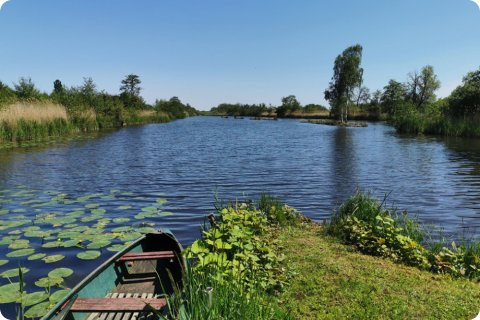
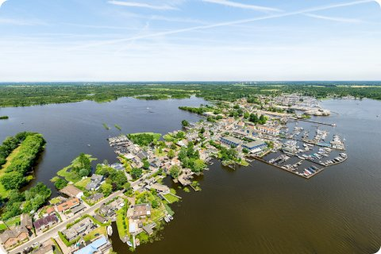
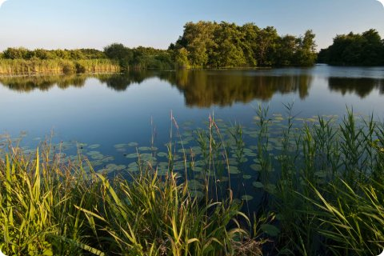
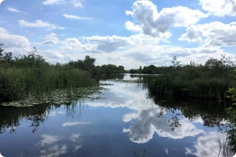

The Loosdrechtse Plassen are a chain of lakes and narrow channels, popular for sailing and rowing.
Take a train to Hilversum, then bus 121 runs straight to the lakes during the summer months.
Rent a rowboat or canoe at Oud-Loosdrecht to explore the channels at your own pace.
Bring sunscreen and water, as there is little shade out on the lakes.

Rent a canoe or small boat to explore the channels, or just walk along the shore paths.

The channels between the lakes are lined with reeds and summer houses, especially around Oud-Loosdrecht.
Quiet in the morning, busier with sailing boats by afternoon.
Several small beaches along the shore are good for a swim on warm days.
Cafes and terraces at the harbors are a nice place to stop for lunch with a view over the water.


Conditions can change quickly on open water, so check the wind before you head out.
Sunset over the open lake is especially nice from the eastern shore.
Check the bus times back to Hilversum before you go, especially outside the summer months.
On calm days the water is like a mirror, perfect for photos from the jetties.